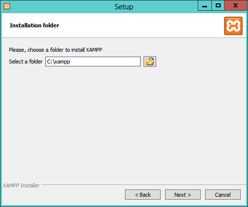

Setting Up a Development Server
If you wish to develop Internet applications but don’t have your own development
server, you will have to upload every modification you make to a server somewhere
else on the Web before you can test it.
Even on a fast broadband connection, this can still represent a significant slowdown
in development time. On a local computer, however, testing can be as easy as saving
an update (usually just a matter of clicking once on an icon) and then hitting the
Refresh button in your browser.
Another advantage of a development server is that you don’t have to worry about
embarrassing errors or security problems while you’re writing and testing, whereas
you need to be aware of what people may see or do with your application when it’s on
a public website. It’s best to iron everything out while you’re still on a home or small
office system, presumably protected by firewalls and other safeguards.
Once you have your own development server, you’ll wonder how you ever managed
without one, and it’s easy to set one up. Just follow the steps in the following sections,
using the appropriate instructions for a PC, a Mac, or a Linux system.
In this chapter, we cover just the server side of the web experience, as described in
Chapter 1
. But to test the results of your work—particularly when we start using Java‐
Script, CSS, and HTML5 later in this book—you should also have an instance of
every major web browser running on some system convenient to you. Whenever pos‐
sible, the list of browsers should include at least Internet Explorer, Mozilla Firefox,
Opera, Safari, and Google Chrome. If you plan to ensure that your sites look good on
mobile devices too, you should try to arrange access to a wide range of Apple iOS and
Google Android phones and tablets.
What Is a WAMP, MAMP, or LAMP?
WAMP, MAMP, and LAMP are abbreviations for “Windows, Apache, MySQL, and
PHP,” “Mac, Apache, MySQL, and PHP,” and “Linux, Apache, MySQL, and PHP.”
These abbreviations describe a fully functioning setup used for developing dynamic
Internet web pages.
WAMPs, MAMPs, and LAMPs come in the form of a package that binds the bundled
programs together so that you don’t have to install and set them up separately. This
means you can simply download and install a single program, and follow a few easy
prompts, to get your web development server up and running in the quickest time
with a minimum hassle.
During installation, several default settings are created for you. The security configu‐
rations of such an installation will not be as tight as on a production web server,
because it is optimized for local use. For these reasons, you should never install such a
setup as a production server.
But for developing and testing websites and applications, one of these installations
should be entirely sufficient.
If you choose not to go the WAMP/MAMP/LAMP route for build‐
ing your own development system, you should know that down‐
loading and integrating the various parts yourself can be very time-
consuming and may require a lot of research in order to configure
everything
fully.
But
if
you
already
have
all
the
components
installed and integrated with one another, they should work with
the examples in this book.
Installing XAMPP on Windows
There are several available WAMP servers, each offering slightly different configura‐
tions, but out of the various open source and free options, the best is probably
XAMPP. You can download it at
http://apachefriends.org
, as shown in
Figure 2-1
.
Figure 2-1. The XAMPP website
I recommend that you always download the latest stable release (in this instance, it’s
1.8.3), and there is a direct download link for Windows, OS X, and Linux on the main
page.
During the lifetime of this edition, some of the screens and options
shown in the following walk-through may change. If so, just use
your common sense to proceed in as similar a manner as possible
to the sequence of actions described.
Once you’ve downloaded the installer, run it to bring up the window shown in
Figure 2-2
. Before arriving at that window, though, if you use an anti-virus program
or have User Account Control activated on Windows, you may first be shown one or
more advisory notices, and will have to click Yes and/or OK to continue installation.

Figure 2-2. The initial installation window of the installer
Click Next and then uncheck any of the components shown in
Figure 2-3
that you
don’t need. For example, at the minimum for this book you will want to keep Apache,
MySQL, PHP, and PHPMyAdmin checked. The other features are not covered in this
book, but you can get more details on all of these, plus the core XAMPP technologies,
at
http://apachefriends.org/faq_windows.html
.
Clicking Next brings up the screen in
Figure 2-4
, in which you should choose a folder
for the installation. You are recommended to accept the default provided unless you
have a good reason to choose a different one. In this book, the default location is
assumed. If the folder you choose exists and is not empty, you will be unable to use it.

Figure 2-3. Select the components to install

Figure 2-4. Choose a folder for the installation
Clicking Next brings up the screen in
Figure 2-5
with a checkbox already checked
(which you can uncheck) for supplying information on adding free installers for
related products in a new web browser window or tab. After you choose whether or
not to receive this information, click the Next button.
Figure 2-5. Information on related free products is available
Having supplied the basic information required by the installer, you will arrive at the
screen in
Figure 2-6
. Setup is ready to start, so click the Next button.
Figure 2-6. Accept the default values offered for the ports
When you click the Next button, installation will begin, and you will see the screen in
Figure 2-7
while it progresses. During installation, you can click any of the icons to
open up a web browser window displaying information on the product shown. The
whole process should take only a few minutes on most computers.
Figure 2-7. Installation is in progress
Once installation is complete, the screen in
Figure 2-8
will be displayed with a check‐
box already checked for starting the XAMPP control panel. I recommend you leave
this checked and then click Finish.
Now you are ready to start using XAMPP by configuring it from the control panel, as
shown in
Figure 2-9
. The panel is automatically displayed if you kept the checkbox
checked on completing installation. Or you can call it up from the Start menu or or
start screen.
Figure 2-8. Click Finish to complete installation
Figure 2-9. The control panel
The first thing I recommend you do is click the Config button at the top-right corner
to call up the window shown in
Figure 2-10
. In particular, if they are not already
checked, I recommend you check the Apache and MySQL boxes to ensure they autos‐
tart. Or, you can simply click the Start buttons for Apache and MySQL to have them
run for this session only.
Figure 2-10. Choose your editor, autostart components and more
While on that screen, you may find that you also wish to alter the port settings used
by clicking Service and Port Settings to call up the window in
Figure 2-11
.
Figure 2-11. Click Save to complete setup
The default ports assigned will normally be port 80 for the Apache web server, 443 for
SSL, and 3306 for MySQL. If you change these values, make sure you insert these
changed values in place of any defaults used later in this book.
The control panel is where you can conduct most of the actions required for manag‐
ing XAMPP, including editing and viewing the various configuration files, and look‐
ing at access, error, and other log files, all with a simple interface. For example, in
Figure 2-12
, the Apache Log button has been clicked, and the folder of log files
opened.
Figure 2-12. Opening the Apache log file folder
Testing the Installation
The first thing to do at this point is verify that everything is working correctly. To do
this, you are going to try to display the default web page, which will have been saved
in the server’s document root folder (see
Figure 2-13
). Enter either of the following
two URLs into the address bar of your browser:
localhost
127.0.0.1
Figure 2-13. How the XAMPP home page should look by default
The word
localhost
is used in URLs to specify the local computer, which will also
respond to the IP address of 127.0.0.1, so you can use either method of calling up the
document root of your web server.
If you chose a server port other than 80 using the control panel (for
example 8080), then you must place a colon followed by that value
after either of the preceding URLs—like this:
localhost:8080
. You
will have to do the same for all example files in this book. So,
instead of entering the URL
localhost/example.php
into the address
bar,
you
should
enter
localhost:8080/example.php
(or
whatever
value you chose).
Accessing the document root
The
document root
is the directory that contains the main web documents for a
domain. This is the one that is entered when a basic URL without a path is typed into
a browser, such as
http://yahoo.com
or, for your local server,
http://localhost.
By default, XAMP uses the following location for this directory:
C:/xampp/htdocs
To ensure that you have everything correctly configured, you should now create the
obligatory “Hello World” file. So create a small HTML file along the following lines
using Windows Notepad or any other program or text editor, but not a rich word
processor such as Microsoft Word (unless you save as plain text):
<html>
<head>
<title>A quick test</title>
</head>
<body>
Hello World!
</body>
</html>
Once you have typed this, save the file into the document root directory previously
discussed, using the filename
test.htm
. If you are using Notepad, make sure that the
“
Save as type” box is changed from “Text Documents (*.txt)” to “All Files (*.*)”. Or, if
you prefer, you can save the file using the
.html
file extension; either is acceptable.
You can now call this page up in your browser by entering one of the following URLs
(according to the extension you used) in its address bar (see
Figure 2-14
):
http://localhost/test.htm
http://localhost/test.html
Figure 2-14. Your first web page
Alternative WAMPs
When software is updated, it sometimes works differently than you’d expected, and
bugs can even be introduced. So if you encounter difficulties that you cannot resolve,
you may prefer to choose one of the other solutions available on the Web instead.
You will still be able to make use of all the examples in this book, but you’ll have to
follow the instructions supplied with each WAMP, which may not be as easy to follow
as the preceding guide.
Here’s a selection of some of the best, in my opinion:
•
EasyPHP:
easyphp.org
•
WAMPServer:
wampserver.com/en
•
Glossword WAMP:
glossword.biz/glosswordwamp
Installing XAMPP on Mac OS X
XAMPP is also available on OS X, and you can download it from
http://apache
friends.org
, as shown previously in
Figure 2-1
.
Double-click the
.dmg
file once downloaded, and then double-click the installer and
follow the same sequence of instructions as for Windows (although you may also be
given checkbox options to choose whether to load the core files, developer files, or
both).
The installation process is similar to Windows, but with XAMPP being installed in
the following location:
/Applications/XAMPP
Upon successful installation, the XAMPP Manager window will open. To ensure
XAMP can take proper control of web serving on your Mac, first you may need to
turn off any Apache web server your Mac is already running, by entering the follow‐
ing in a Terminal window:
sudo apachectl stop
Now you can click the middle tab (entitled Manage Servers) at the top of the window,
and then click Start All to get the XAMPP servers running. After this, click the Wel‐
come tab to return to the main Manager screen, and then click the Go to Application
button, which will call up the web page shown in
Figure 2-13
. You are now all set to
use the software suite.
For more information on installing and using Mac XAMPP, please refer to
apache
friends.org/faq_osx.html
In the future, to call up the Manager, open your
Applications
folder
and then locate the
XAMPP
folder, and run
manager-osx
.
Accessing the Document Root
On Macs, the XAMPP document root (in which web documents are stored and
served from) can be found at
/Applications/XAMPP/htdocs
To test your new installation, type some HTML such as the following into TextEdit
(or any editor that can save as plain text) and then save it in the document root as
test.html
. If you then type
localhost/test.html
into the address bar of your browser, the
result should be the same as shown previously in
Figure 2-14
:
<html>
<head>
<title>A quick test</title>
</head>
<body>
Hello World!
</body>
</html>
Installing a LAMP on Linux
This book is aimed mostly at PC and Mac users, but its contents will work equally
well on a Linux computer. However, there are dozens of popular flavors of Linux, and
each of them may require installing a LAMP in a slightly different way, so I can’t
cover them all in this book.
However, many Linux versions come preinstalled with a web server and MySQL, and
the chances are that you may already be all set to go. To find out, try entering the
following into a browser and see whether you get a default document root web page:
http://localhost
If this works, you probably have the Apache server installed and may well have
MySQL up and running too; check with your system administrator to be sure.
If you don’t yet have a web server installed, however, there’s a version of XAMPP
available that you can download at
apachefriends.org
.
Installation is similar to the sequence shown in the Windows section, and if you need
further assistance on using the suite, please refer to
apachefriends.org/faq_linux.html
Working Remotely
If you have access to a web server already configured with PHP and MySQL, you can
always use that for your web development. But unless you have a high-speed connec‐
tion, it is not always your best option. Developing locally allows you to test modifica‐
tions with little or no upload delay.
Accessing MySQL remotely may not be easy either. You may have to Telnet or SSH
into your server to manually create databases and set permissions from the command
line. Your web-hosting company will advise you on how best to do this and provide
you with any password it has set for your MySQL access (as well as, of course, for
getting into the server in the first place).
Logging In
I recommend that, at minimum, Windows users should install a program such as
PuTTY, available at
http://putty.org
, for Telnet and SSH access (remember that SSH is
much more secure than Telnet).
On a Mac, you already have SSH available. Just select the
Applications
folder, followed
by
Utilities
, and then launch Terminal. In the terminal window, log in to a server
using SSH as follows:
ssh mylogin@server.com
where
server.com
is the name of the server you wish to log into and
mylogin
is the
username you will log in under. You will then be prompted for the correct password
for that username and, if you enter it correctly, you will be logged in.
Using FTP
To transfer files to and from your web server, you will need an FTP program. If you
go searching the Web for a good one, you’ll find so many that it could take you quite
a while to come across one with all the right features for you.
Nowadays I always recommend FireFTP, because of these advantages:
•
It is an add-on for the Firefox web browser, and will therefore work on any plat‐
form on which Firefox runs.
•
Calling it up can be as simple as selecting a bookmark.
•
It is one of the fastest and easiest-to-use FTP programs that I have encountered.
You may say, “But I use only Microsoft Internet Explorer, and
FireFTP is not available for it,” but I would counter that if you are
going to develop web pages, you need a copy of each of the main
browsers installed on your PC anyway, as suggested at the start of
this chapter.
To install FireFTP, visit
http://fireftp.mozdev.org
using Firefox and click the Down‐
load FireFTP link. It’s about half a megabyte in size and installs very quickly. Once it’s
installed, restart Firefox; you can then access FireFTP from the Tools menu (see
Figure 2-15
).
Another excellent FTP program is the open source FileZilla, available from
http://
filezilla-project.org
, for Windows, Linux, and Mac OS X 10.5 or newer.
Of course, if you already have an FTP program, all the better—stick with what you
know.
Figure 2-15. FireFTP offers full FTP access from within Firefox
Using a Program Editor
Although a plain-text editor works for editing HTML, PHP, and JavaScript, there
have been some tremendous improvements in dedicated program editors, which now
incorporate very handy features such as colored syntax highlighting. Today’s program
editors are smart and can show you where you have syntax errors before you even
run a program. Once you’ve used a modern editor, you’ll wonder how you ever man‐
aged without one.
There are a number of good programs available, but I have settled on Editra, because
it’s free and available on Mac, Windows, and Linux/Unix. You can download a copy
by visiting
http://editra.org
and selecting the Download link toward the top left of the
page, where you can also find the documentation for it.
As you can see from
Figure 2-16
, Editra highlights the syntax appropriately, using
colors to help clarify what’s going on. What’s more, you can place the cursor next to
brackets or braces, and Editra will highlight the matching pair so that you can check
whether you have too many or too few. In fact, Editra does a lot more in addition,
which you will discover and enjoy as you use it.
Figure 2-16. Program editors are superior to plain-text editors
Again, if you have a different preferred program editor, use that; it’s always a good
idea to use programs you’re already familiar with.
Using an IDE
As good as dedicated program editors can be for your programming productivity,
their utility pales into insignificance when compared to
integrated development envi‐
ronments
(IDEs), which offer many additional features such as in-editor debugging
and program testing, as well as function descriptions and much more.
Figure 2-17
shows the popular phpDesigner IDE with a PHP program loaded into the
main frame, and the righthand Code Explorer listing the various classes, functions,
and variables that it uses.
Figure 2-17. When you’re using an IDE such as phpDesigner, PHP development becomes
much quicker and easier
When developing with an IDE, you can set breakpoints and then run all (or portions)
of your code, which will then stop at the breakpoints and provide you with informa‐
tion about the program’s current state.
As an aid to learning programming, the examples in this book can be entered into an
IDE and run there and then, without the need to call up your web browser. There are
several IDEs available for different platforms, most of which are commercial, but
there are some free ones too.
Table 2-1
lists some of the most popular PHP IDEs,
along with their download URLs.
Choosing an IDE can be a very personal thing, so if you intend to use one, I advise
you to download a couple or more to try them out first; they all either have trial ver‐
sions or are free to use, so it won’t cost you anything.
Table 2-1. A selection of PHP IDEs
| IDE |
Download URL |
Cost |
Win |
Mac |
Lin |
| Eclipse PDT |
http://eclipse.org/pdt/downloads/ |
Free |
✓ |
✓ |
✓ |
| Komodo IDE |
http://activestate.com/Products/komodo_ide |
$245 |
✓ |
✓ |
✓ |
| NetBeans |
http://www.netbeans.org |
Free |
✓ |
✓ |
✓ |
| phpDesigner |
http://mpsoftware.dk |
$39 |
✓ |
|
|
| PHPEclipse |
http://phpeclipse.de |
Free |
✓ |
✓ |
✓ |
| PhpED |
http://nusphere.com |
$119 |
✓ |
|
✓ |
| PHPEdit |
http://www.phpedit.com |
$119 |
✓ |
|
|
You should take the time to install a program editor or IDE you are comfortable with
and you’ll then be ready to try out the examples in the coming chapters.
Armed with these tools, you are now ready to move on to
Chapter 3
, where we’ll start
exploring PHP in further depth and find out how to get HTML and PHP to work
together, as well as how the PHP language itself is structured. But before moving on, I
suggest you test your new knowledge with the following questions.